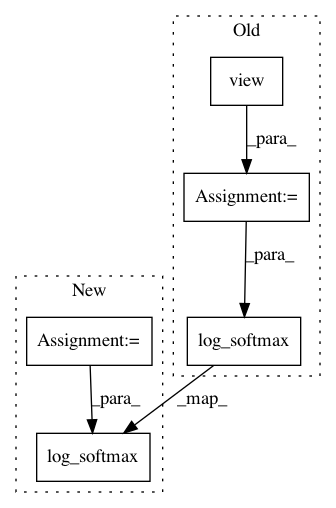

d3795d6cd1c66ac05dc0f4861ce69ab4680bff3d,fairseq/models/fairseq_decoder.py,FairseqDecoder,get_normalized_probs,#FairseqDecoder#Any#Any#,22
Before Change
def get_normalized_probs(self, net_output, log_probs):
Get normalized probabilities (or log probs) from a net"s output.
vocab = net_output.size(-1)
net_output1 = net_output.view(-1, vocab)
if log_probs:
return F.log_softmax(net_output1, dim=1).view_as(net_output)
else:
return F.softmax(net_output1, dim=1).view_as(net_output)
After Change
def get_normalized_probs(self, net_output, log_probs):
Get normalized probabilities (or log probs) from a net"s output.
logits = net_output[0]
if log_probs:
return F.log_softmax(logits, dim=-1)
else:
return F.softmax(logits, dim=-1)
def max_positions(self):
In pattern: SUPERPATTERN
Frequency: 3
Non-data size: 5
Instances
Project Name: elbayadm/attn2d
Commit Name: d3795d6cd1c66ac05dc0f4861ce69ab4680bff3d
Time: 2018-04-02
Author: myleott@fb.com
File Name: fairseq/models/fairseq_decoder.py
Class Name: FairseqDecoder
Method Name: get_normalized_probs
Project Name: pytorch/examples
Commit Name: 0634306968ed7f28e2b11b69d3b2df348b8ec53c
Time: 2019-11-11
Author: fedor.shabashev@gmail.com
File Name: mnist/main.py
Class Name: Net
Method Name: forward